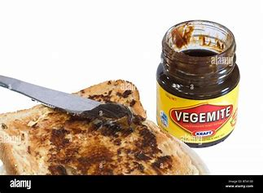
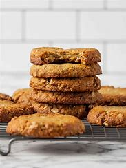

Australian cuisine is famous for hearty pies, sweet desserts, and unique local flavors. Discover classic dishes loved across the country!

Vegemite on Toast
Classic breakfast spread with yeast extract.
See Recipe
Meat Pie
Savory pie filled with minced meat and gravy.
See Recipe
Lamingtons
Sponge cake coated with chocolate and coconut.
See Recipe

Pavlova
Meringue-based dessert topped with cream and fresh fruit.
See Recipe
Barbecued Sausages
Popular Aussie BBQ sausages, perfect for outdoor meals.
See Recipe

Anzac Biscuits
Crunchy biscuits made from oats, coconut, and golden syrup.
See Recipe